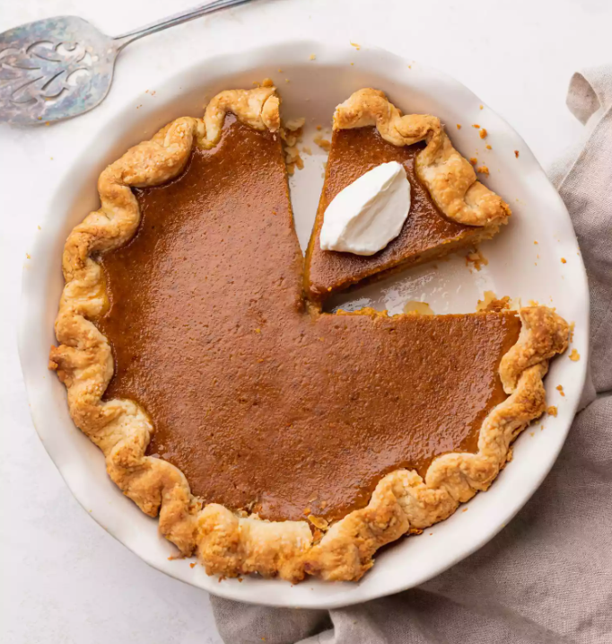

Pumkin Pie

No fall season is complete without one(or many) pumkin pies
consumed
Source: SimplyRecipes.com
This is the BEST pumpkin pie recipe! Make it with canned or fresh pumpkin
puree for Thanksgiving or anytime the mood for homemade pumpkin pie
strikes.
Prep Time: 10 Minutes
Cook Time: 60 Minutes
Total Time: 70 Minutes
Portions: 8-12 Servings
Ingredients
- Eggs, large [2]
- Egg yolk, large [1]
- Pumkin purée [2 cups]
- Heavy cream [1 1/2 cups]
- Pie crust / shells, large [1 homemade or two store-bought]
- Dark brown sugar, packed [1/2 cup]
- White sugar [1/3 cup]
- Lemon zest, finely grated [1/2 tsp]
- Cinnamon [2 tsp]
- Ginger, ground [1 tsp]
- Nutmeg, ground [1/4 tsp]
- Cloves, ground [1/4 tsp]
- Cardamom [1/8 tsp]
- Salt [1/2 tsp]
Directions:
- Prepare the crust:
-
If using a homemade crust, line a deep-dish pie pan and freeze for 1-2
hours
-
If using store-bought frozen crusts, simply unwrap them just before
using. You’ll need 2.
-
Preheat oven to 425°F and position a rack in the bottom 1/3 of the
oven.
- Make the filling:
- Beat the eggs in a large bowl.
-
Mix in the brown sugar, white sugar, salt, cinnamon, ground ginger,
nutmeg, ground cloves, cardamom, and lemon zest.
- Mix in the pumpkin purée and stir in the cream.
-
Beat together until everything is well mixed. The mixture will be
runny but will set up in the oven.
- Fill the pie shell and bake:
-
Pour the filling into 1 chilled homemade deep-dish pie crust or 2
premade frozen pie shells.
- Bake in the oven at 425°F for 15 minutes.
- After 15 minutes, lower the temperature to 350°F.
-
The pie is done when a knife tip inserted in the center comes out wet
but relatively clean. The center should be just barely jiggly. For 1
deep-dish pie, this will take 50 to 60 minutes more. For 2 shallow
pies, bake for 35 to 45 minutes more.
-
Note that the pumpkin pie will come out of the oven all puffed up
(from the leavening of the eggs), and will deflate as it cools.
- Cool the pie on a rack, then serve:
-
You can leave cooled pumpkin pie on the counter for up to 4 hours,
then wrap it tightly and move it to the fridge for up to 3 days.
- If possible, let it come to room temperature before serving.